File: 000600.gt.txt (if the image is defective, simply delete all Arabic text and the line will be excluded)
و لا تسرق .
File: 000601.gt.txt (if the image is defective, simply delete all Arabic text and the line will be excluded)
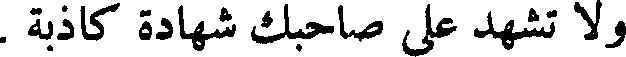
ولا تشهد على صاحبك شهادة كاذبة .
File: 000602.gt.txt (if the image is defective, simply delete all Arabic text and the line will be excluded)
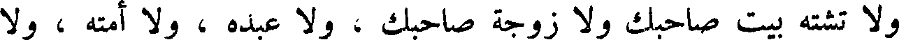
و لا تشته بيت صاحبك و لا زوجة صاحبك ، و لا عبده ، و لا أمته ولا
File: 000603.gt.txt (if the image is defective, simply delete all Arabic text and the line will be excluded)
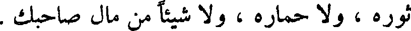
ثوره ، ولا حماره ، و لا شيئا من مال صاحبك .
File: 000604.gt.txt (if the image is defective, simply delete all Arabic text and the line will be excluded)
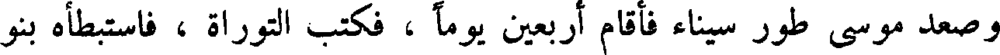
وصعد موسى طور سيناء فأقام أربعين يوما ، فكتب التوراة ، فاسبطأه بنو
File: 000605.gt.txt (if the image is defective, simply delete all Arabic text and the line will be excluded)
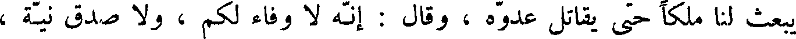
يبعث لنا ملكا حتى يقاتل عدوه ، وقال : انه وفاء لكم ، ولا صدق نية ،
File: 000606.gt.txt (if the image is defective, simply delete all Arabic text and the line will be excluded)
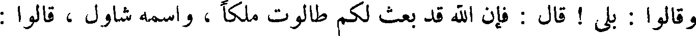
وقالوا : بلى ! قال فإن الله قد بعث لكم طالوت مالكا ، واسمه شاول ، قالوا :
File: 000607.gt.txt (if the image is defective, simply delete all Arabic text and the line will be excluded)
والله ما هو من سبط الملك والنبوة ، ما هو من ولد لاوي ، و لا يهوذا ، وإنما
File: 000608.gt.txt (if the image is defective, simply delete all Arabic text and the line will be excluded)
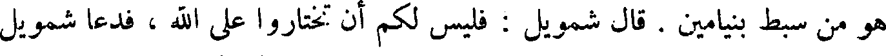
هو من سبط بنيامين . قال شمويل : فليس لكم أن تختاروا على الله ، فدعا شمويل
File: 000609.gt.txt (if the image is defective, simply delete all Arabic text and the line will be excluded)
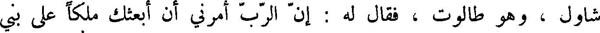
شاول ، وهو طالوت ، فقال له : أن الرب امرني أن ابعثك ملكا على بني
File: 000610.gt.txt (if the image is defective, simply delete all Arabic text and the line will be excluded)
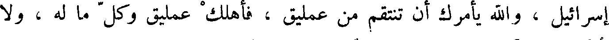
إسرائيل ، والله يأمرك أن تنتقم من عمليق ، فأهلك عمليق وكل ما له ، و لا
File: 000611.gt.txt (if the image is defective, simply delete all Arabic text and the line will be excluded)
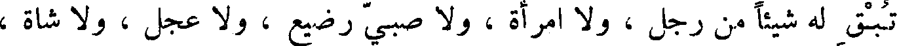
تبق له شيئا من رجل ، و لا امرأة ، و لا صبي رضيع ، و لا عجل ، ولا شاة ،
File: 000612.gt.txt (if the image is defective, simply delete all Arabic text and the line will be excluded)
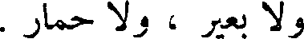
و لا بعير ، و لا حمار .
File: 000613.gt.txt (if the image is defective, simply delete all Arabic text and the line will be excluded)
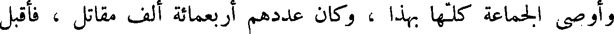
وأوصى الجماعة كلها بهذا ، وكان عددهم أربعمائة ألف مقاتل ، فأقبل
File: 000614.gt.txt (if the image is defective, simply delete all Arabic text and the line will be excluded)
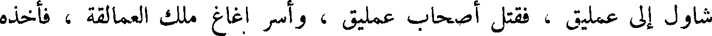
شاول إلى عمليق ، فقتل أصحاب عمليق ، واسر اغاغ ملك العمالقة ، فأخذه
File: 000615.gt.txt (if the image is defective, simply delete all Arabic text and the line will be excluded)
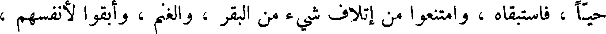
حيا ، فاستبقاه ، وامتنعوا من إتلاف شيء من البقر ، والغنم ، وابقوا لأنفسهم ،
File: 000616.gt.txt (if the image is defective, simply delete all Arabic text and the line will be excluded)
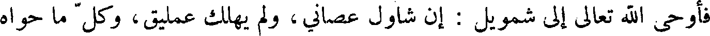
فأوحى الله تعالى إلى شمويل : إن شاول عصاني، ولم يهلك عمليق، وكل ما حواه
File: 000617.gt.txt (if the image is defective, simply delete all Arabic text and the line will be excluded)
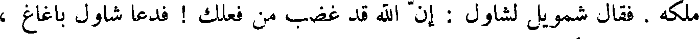
ملكه . فقال شمويل لشاول : أن الله قد غضب من فعلك ! فدعا شاول باغاغ ،
File: 000618.gt.txt (if the image is defective, simply delete all Arabic text and the line will be excluded)
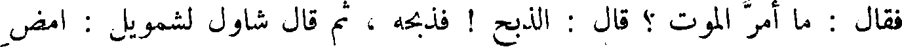
فقال : ما أمر الموت ؟ قال : الذبح ! فذبحه ، ثم قال شاول لشمويل : امض
File: 000619.gt.txt (if the image is defective, simply delete all Arabic text and the line will be excluded)
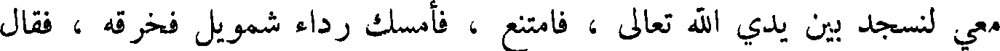
معي لنسجد بين يديش الله تعالى ، فامتنع ، فأمسك رداء شمويل فخرقه ، فقال
File: 000620.gt.txt (if the image is defective, simply delete all Arabic text and the line will be excluded)
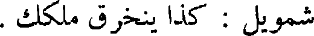
شمويل : كذا ينخرق ملكك .
File: 000621.gt.txt (if the image is defective, simply delete all Arabic text and the line will be excluded)
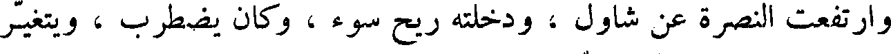
وارتفعت النصرة عن شاول ، ودخلته ريح سوء ، وكان يضطرب ، ويتغير
File: 000622.gt.txt (if the image is defective, simply delete all Arabic text and the line will be excluded)
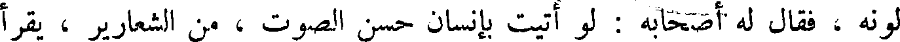
لونه ، فقال أصحابه : لو أتيت بإنسان حسن الصوت ، من الشعارير ، يقرا
File: 000623.gt.txt (if the image is defective, simply delete all Arabic text and the line will be excluded)
عليك ، إذا دخلتك هذه الريح السوء ! فأرسل إلى ايشا : ابعث إلي داود ابنك ،
File: 000624.gt.txt (if the image is defective, simply delete all Arabic text and the line will be excluded)
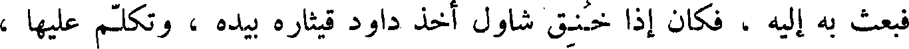
فبعث به إليه ، فكان إذا خنق شاول اخذ داود قيثاره بيده ، وتكلم عليها ،
File: 000625.gt.txt (if the image is defective, simply delete all Arabic text and the line will be excluded)
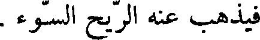
فيذهب عنه الريح السوء .
File: 000626.gt.txt (if the image is defective, simply delete all Arabic text and the line will be excluded)
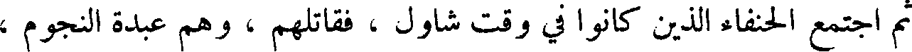
ثم اجتمع الحنفاء الذين كانوا في وقت شاول ، فقاتلهم ، وهم عبدة النجوم ،
File: 000627.gt.txt (if the image is defective, simply delete all Arabic text and the line will be excluded)
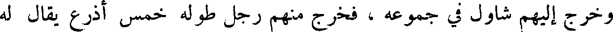
وخرج إليهم شاول في جموعه ، فخرج منهم رجل طوله خمس اذرع يقال له
File: 000628.gt.txt (if the image is defective, simply delete all Arabic text and the line will be excluded)
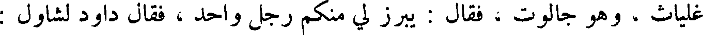
غلياث ، وهو جالوت ، فقال : يبرز لي منكم رجل واحد ، فقال داود لشاول :
File: 000629.gt.txt (if the image is defective, simply delete all Arabic text and the line will be excluded)
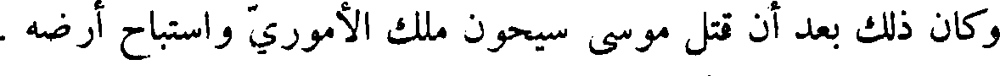
وكان ذلك بعد أن قتل موسى سيحون ملك الأموري واستباح أرضه .
To Save: `Ctrl+s`, make sure to choose `Webpage, complete`!